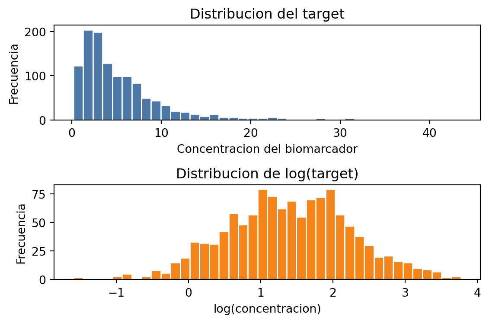

Redes neuronales feedforward, verosimilitud y regularización
En esta tarea trabajaremos con redes neuronales feedforward o multilayer perceptrons (MLP). El objetivo es conectar tres ideas vistas en clases:
Una red neuronal como composición de transformaciones afines y funciones de activación.
El entrenamiento como minimización de una función de pérdida derivada desde máxima verosimilitud.
La evaluación de generalización mediante capacidad del modelo, sesgo-varianza y estrategias de regularización.
El problema se contextualiza en la predicción de una variable biomédica positiva. Suponga que se quiere estimar la concentración de un biomarcador plasmático a partir de variables clínicas y experimentales. Por definición, la concentración real no puede ser negativa, pero un modelo de regresión estándar con pérdida cuadrática no impone esta restricción de manera explícita.
Trabajaremos con un conjunto de datos sintético. Puede usar el siguiente generador:
import numpy as npimport pandas as pdimport matplotlib.pyplot as pltdef generar_datos_biomarcador(n=1200, ruido=0.25, seed=42): rng = np.random.default_rng(seed) edad = rng.uniform(18, 90, size=n) dosis = rng.uniform(0, 1, size=n) horas = rng.uniform(0, 24, size=n) indice_riesgo = rng.normal(0, 1, size=n) inflamacion_base = rng.gamma(shape=2.0, scale=1.0, size=n) X = np.column_stack([ edad, dosis, horas, indice_riesgo, inflamacion_base, ])# Funcion latente no lineal. La variable observada se genera como positiva. g = (-1.2+0.018* edad+1.4* np.sin(np.pi * dosis)+0.03* horas+0.55* indice_riesgo+0.35* np.sqrt(inflamacion_base)-0.015* dosis * horas ) y = np.exp(g + rng.normal(0, ruido, size=n)) columnas = ["edad", "dosis", "horas", "indice_riesgo", "inflamacion_base"]return pd.DataFrame(X, columns=columnas), yX, y = generar_datos_biomarcador()fig, axes = plt.subplots(2, 1, figsize=(6, 4))axes[0].hist(y, bins=40, color="#4c78a8", edgecolor="white")axes[0].set_title("Distribucion del target")axes[0].set_xlabel("Concentracion del biomarcador")axes[0].set_ylabel("Frecuencia")axes[1].hist(np.log(y), bins=40, color="#f58518", edgecolor="white")axes[1].set_title("Distribucion de log(target)")axes[1].set_xlabel("log(concentracion)")axes[1].set_ylabel("Frecuencia")plt.tight_layout()plt.show()

Antes de entrenar, divida los datos en conjuntos de entrenamiento, validación y prueba. Estandarice las variables de entrada usando sólo estadísticas del conjunto de entrenamiento. No use el conjunto de prueba para seleccionar arquitectura, hiperparámetros, número de épocas ni criterios de parada.
1. Red neuronal feedforward desde cero
Implemente una red neuronal feedforward para regresión usando únicamente librerías base como numpy, pandas y matplotlib. No use torch, tensorflow, jax, sklearn.neural_network ni diferenciación automática para esta parte.
Su implementación debe incluir:
Una arquitectura completamente conectada con al menos una capa oculta.
Funciones de activación no lineales, por ejemplo ReLU o tanh.
Inicialización de pesos justificada, por ejemplo Xavier o He.
Forward pass.
Cálculo de la pérdida.
Backpropagation implementado manualmente.
Entrenamiento con descenso de gradiente por minibatches.
Registro de la pérdida de entrenamiento y validación durante las épocas.
Comience entrenando el modelo con pérdida cuadrática media: \[
L(\phi) = \frac{1}{I}\sum_{i=1}^{I} (y_i - f[x_i,\phi])^2.
\] Reporte al menos tres configuraciones de arquitectura, variando profundidad y/o número de unidades ocultas. Para cada una, informe:
Número de parámetros entrenables.
Curvas de pérdida de entrenamiento y validación.
Error en el conjunto de prueba usando MAE, RMSE y error relativo medio.
Una figura de predicción versus valor real.
Una breve discusión sobre subajuste, sobreajuste y capacidad del modelo.
2. Comparación con PyTorch
Implemente en PyTorch una red equivalente a la mejor arquitectura encontrada en la parte anterior. La comparación debe ser justa, es decir, use la misma partición de datos, el mismo preprocesamiento y una arquitectura comparable.
Compare la implementación desde cero con PyTorch en cuanto a:
Desempeño predictivo en el conjunto de prueba.
Velocidad de entrenamiento.
Estabilidad de la optimización.
Sensibilidad a la tasa de aprendizaje.
Facilidad para cambiar arquitectura, función de pérdida y regularización.
Discuta posibles diferencias. Considere aspectos como inicialización, optimizadores, precisión numérica, tamaño de minibatch, criterios de parada y cálculo manual de gradientes.
3. Verosimilitud para una variable objetivo positiva
La concentración del biomarcador es estrictamente positiva. Por lo tanto, una pérdida cuadrática con salida lineal puede ser inadecuada, ya que no representa explícitamente el dominio del target ni su posible asimetría.
Modifique la formulación probabilística del modelo para que la distribución condicional de la variable objetivo tenga soporte positivo. Debe elegir al menos una de las siguientes alternativas:
Modelo log-normal: suponga que \(\log(y)\) sigue una distribución normal. La red puede predecir \(\mu(x)\) y opcionalmente \(\sigma(x)\) o una varianza global.
Modelo gamma: suponga que \(y\) sigue una distribución Gamma. La red debe predecir parámetros positivos usando una transformación como softplus o exp.
Modelo normal truncado o salida positiva: use una salida positiva para el modelo y derive claramente qué pérdida está minimizando.
Para la alternativa elegida:
Escriba la verosimilitud \(p(y_i \mid x_i, \phi)\).
Derive la pérdida de log-verosimilitud negativa.
Explique qué parámetros de la distribución son predichos por la red.
Indique cómo garantiza que los parámetros que deben ser positivos efectivamente lo sean.
Implemente la pérdida en su red from scratch o en PyTorch.
Compare sus resultados contra el modelo con MSE.
Incluya una discusión sobre el efecto de esta modificación en las predicciones bajas. En particular: ¿disminuye la frecuencia de predicciones negativas o cercanas a cero?, ¿mejora el error relativo para pacientes con concentraciones pequeñas?, ¿cambia la calibración de la incertidumbre si el modelo predice una varianza?
4. Regularización explícita, implícita y heurística
Diseñe experimentos para estudiar estrategias de regularización. Debe evaluar al menos cuatro de las siguientes:
Regularización \(\ell_2\) sobre los pesos, sin penalizar sesgos.
Regularización \(\ell_1\) o combinación \(\ell_1\)-\(\ell_2\).
Early stopping usando el conjunto de validación.
Dropout.
Reducción o aumento del tamaño de minibatch.
Aumento de datos mediante perturbaciones controladas de las entradas.
Ensembling de modelos entrenados con distintas semillas.
Cambio de capacidad del modelo mediante profundidad o ancho de capas.
Para cada estrategia seleccionada, antes de entrenar el modelo escriba qué espera que ocurra y por qué. Después del experimento, compare esa expectativa con los resultados usando tablas y figuras. Por ejemplo: “esperamos que dropout aumente el error de entrenamiento, pero reduzca el error de validación”. Luego verifique si esto ocurrió observando las curvas de pérdida y las métricas en validación/prueba.
Responda:
¿Qué estrategia redujo más la brecha entre pérdida de entrenamiento y validación?
¿Qué estrategia mejoró más el desempeño en prueba?
¿Qué estrategia empeoró el desempeño y por qué?
¿Qué diferencias observa entre regularización explícita, como \(\lambda g[\phi]\), y regularización implícita inducida por SGD?
¿Cómo cambia el resultado al modificar el tamaño de minibatch manteniendo fija la arquitectura?
¿En qué casos el early stopping se comporta de manera similar a una penalización \(\ell_2\)?
¿Existe evidencia de doble descenso o de una relación no monótona entre capacidad y error de prueba?
Si usa dropout, ¿cómo cambia el comportamiento cuando aumenta la probabilidad de apagar unidades?
5. Sensibilidad, ruido y sesgo-varianza
Repita una parte de sus experimentos bajo diferentes niveles de ruido en el generador de datos. Use al menos tres valores para el parámetro ruido, por ejemplo 0.10, 0.25 y 0.50.
Analice:
Cómo cambia el error irreducible esperado.
Cómo se modifica la brecha entre entrenamiento y validación.
Qué arquitecturas son más sensibles al ruido.
Qué estrategias de regularización se vuelven más importantes cuando el ruido aumenta.
Si aumentar la cantidad de datos reduce la varianza observada entre distintas semillas.
Conecte su análisis con la descomposición conceptual del error en ruido, sesgo y varianza. No es necesario estimar formalmente los tres términos, pero sí debe argumentar cuál de ellos parece dominar en cada escenario.
6. Preguntas de discusión
Responda de manera breve y precisa:
¿Por qué una red con ReLU implementa una función lineal por partes?
¿Qué información debe guardarse durante el forward pass para poder ejecutar backpropagation eficientemente?
¿Por qué una red suficientemente grande puede tener pérdida de entrenamiento casi cero y aun así generalizar mal?
¿Qué rol cumple el conjunto de validación en la selección de hiperparámetros?
¿Por qué no se debe usar el conjunto de prueba para decidir cuándo detener el entrenamiento?
¿Qué diferencia práctica hay entre minimizar MSE y minimizar una NLL derivada de una distribución log-normal?
Si dos modelos tienen RMSE similar, pero uno nunca predice valores negativos, ¿cuál preferiría para este problema y por qué?
¿Cómo se interpreta la regularización \(\ell_2\) desde una perspectiva probabilística MAP?
¿Por qué usualmente se regularizan los pesos, pero no los sesgos?
¿Qué costo computacional se tiene al usar un ensamble y cuándo se justificaría?
Entregables
Debe entregar un notebook o informe reproducible que incluya lo siguiente:
Código completo de la red neuronal desde cero.
Código de la implementación equivalente en PyTorch.
Derivación matemática de la pérdida positiva elegida.
Tablas comparativas de resultados.
Figuras de entrenamiento, validación y predicción.
Análisis de regularización y sensibilidad al ruido.
Respuestas a las preguntas de discusión.
Conclusiones sobre qué modelo recomendaría y bajo qué restricciones.
La evaluación considerará la corrección de la implementación, la claridad de las derivaciones, el diseño experimental, la calidad de las visualizaciones y la profundidad del análisis.